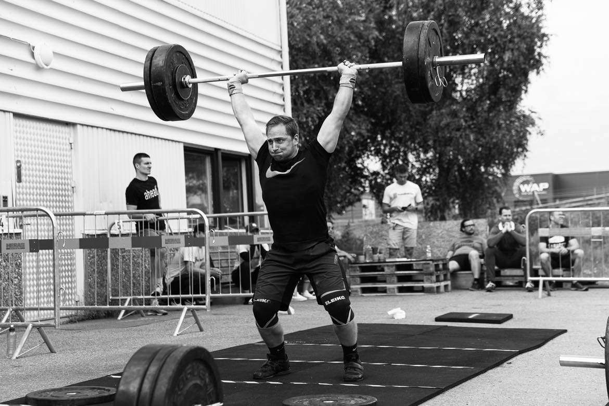

About
Hello, I'm Isac, a passionate fitness enthusiast currently pursuing my fifth year of engineering studies in the beautiful city of Umeå. Alongside my academic endeavors, I'm working towards a master's degree in risk management, specialized in the banking and insurance sector.
My journey in engineering has not only deepened my understanding of complex systems but has also fueled my curiosity for finding solutions to real-world challenges. I thrive on the dynamic nature of risk management, where each obstacle becomes an opportunity for growth and learning.
Beyond the academic realm, you'll often find me immersed in the world of fitness. Whether it's lifting weights, exploring new workout routines, or advocating for a healthy lifestyle, I believe in the transformative power of physical well-being. The discipline and dedication required in fitness mirror the principles I apply in both my academic and personal pursuits.
As I navigate the intersection of technology, risk, and well-being, I am driven by a commitment to contribute meaningfully to both the engineering field and the broader community. Join me on this journey of exploration, growth, and the pursuit of a balanced and fulfilling life.